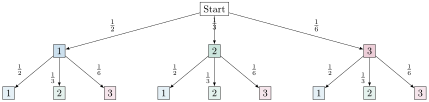
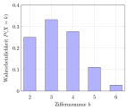

Aufgabe 6.1
Auf einem Glücksrad sind die Sektoren mit den Ziffern $1$, $2$ und $3$ so aufgeteilt, dass $P(1) = \frac{1}{2}$ , $P(2) = \frac{1}{3}$ und $P(3) = \frac{1}{6}$. Man bestimme die Verteilung der Zufallsgrösse $X =$ «Ziffernsumme nach zweimaligem Drehen» und stelle sie in einem Histogramm dar.
- Erstellen Sie eine Tabelle aller möglichen Ergebnisse $(i,j)$ beim zweimaligen Drehen
- Berechnen Sie für jedes Paar die Wahrscheinlichkeit als Produkt $P(i) \cdot P(j)$
- Gruppieren Sie die Ergebnisse nach ihrer Ziffernsumme $i + j$
- Addieren Sie die Wahrscheinlichkeiten für gleiche Summen
- Überprüfen Sie am Ende, ob die Summe aller Wahrscheinlichkeiten 1 ergibt
Schritt 1: Visualisierung des Glücksrads

Schritt 2: Baumdiagramm für zweimaliges Drehen

Schritt 3: Alle möglichen Ergebnisse beim zweimaligen Drehen
Bei zwei Drehungen gibt es $3 \cdot 3 = 9$ mögliche Ergebnispaare $(i,j)$. Da die Drehungen unabhängig sind, gilt: $$P((i,j)) = P(i) \cdot P(j)$$
| 1. Dreh | 2. Dreh | Summe | Wahrscheinlichkeit | Berechnung |
| 1 | 1 | 2 | $\frac{1}{2} \cdot \frac{1}{2} = \frac{1}{4}$ | |
| 1 | 2 | 3 | $\frac{1}{2} \cdot \frac{1}{3} = \frac{1}{6}$ | |
| 1 | 3 | 4 | $\frac{1}{2} \cdot \frac{1}{6} = \frac{1}{12}$ | |
| 2 | 1 | 3 | $\frac{1}{3} \cdot \frac{1}{2} = \frac{1}{6}$ | |
| 2 | 2 | 4 | $\frac{1}{3} \cdot \frac{1}{3} = \frac{1}{9}$ | |
| 2 | 3 | 5 | $\frac{1}{3} \cdot \frac{1}{6} = \frac{1}{18}$ | |
| 3 | 1 | 4 | $\frac{1}{6} \cdot \frac{1}{2} = \frac{1}{12}$ | |
| 3 | 2 | 5 | $\frac{1}{6} \cdot \frac{1}{3} = \frac{1}{18}$ | |
| 3 | 3 | 6 | $\frac{1}{6} \cdot \frac{1}{6} = \frac{1}{36}$ |
Schritt 4: Bestimmung der Verteilung von X
Nun fassen wir die Wahrscheinlichkeiten für gleiche Summen zusammen:
- $P(X=2) = P((1,1)) = \frac{1}{4}$
- $P(X=3) = P((1,2)) + P((2,1)) = \frac{1}{6} + \frac{1}{6} = \frac{2}{6} = \frac{1}{3}$
- $P(X=4) = P((1,3)) + P((2,2)) + P((3,1)) = \frac{1}{12} + \frac{1}{9} + \frac{1}{12}$
- $P(X=5) = P((2,3)) + P((3,2)) = \frac{1}{18} + \frac{1}{18} = \frac{2}{18} = \frac{1}{9}$
- $P(X=6) = P((3,3)) = \frac{1}{36}$
Für $P(X=4)$ müssen wir die Brüche gleichnamig machen: $$P(X=4) = \frac{1}{12} + \frac{1}{9} + \frac{1}{12} = \frac{2}{12} + \frac{1}{9} = \frac{6}{36} + \frac{4}{36} = \frac{10}{36} = \frac{5}{18}$$
Schritt 5: Kontrolle und Verteilungstabelle
Kontrolle der Summe: $$\frac{1}{4} + \frac{1}{3} + \frac{5}{18} + \frac{1}{9} + \frac{1}{36} = \frac{9}{36} + \frac{12}{36} + \frac{10}{36} + \frac{4}{36} + \frac{1}{36} = \frac{36}{36} = 1 \checkmark$$
Verteilungstabelle:
| $k$ | 2 | 3 | 4 | 5 | 6 |
| $P(X=k)$ | $\frac{1}{4}$ | $\frac{1}{3}$ | $\frac{5}{18}$ | $\frac{1}{9}$ | $\frac{1}{36}$ |
| $P(X=k)$ dezimal | 0.250 | 0.333 | 0.278 | 0.111 | 0.028 |
Schritt 6: Histogramm

Berechnung von Erwartungswert und Varianz:
Erwartungswert: \begin{align*} E[X] &= \sum_{k=2}^{6} k \cdot P(X=k)\\ &= 2 \cdot \frac{1}{4} + 3 \cdot \frac{1}{3} + 4 \cdot \frac{5}{18} + 5 \cdot \frac{1}{9} + 6 \cdot \frac{1}{36}\\ &= \frac{1}{2} + 1 + \frac{10}{9} + \frac{5}{9} + \frac{1}{6}\\ &= \frac{9}{18} + \frac{18}{18} + \frac{20}{18} + \frac{10}{18} + \frac{3}{18} = \frac{60}{18} = \frac{10}{3} \approx 3.33 \end{align*}
Varianz: \begin{align*} E[X^2] &= 4 \cdot \frac{1}{4} + 9 \cdot \frac{1}{3} + 16 \cdot \frac{5}{18} + 25 \cdot \frac{1}{9} + 36 \cdot \frac{1}{36}\\ &= 1 + 3 + \frac{80}{18} + \frac{50}{18} + 1 = 5 + \frac{130}{18} = \frac{220}{18}\\ \operatorname{Var}(X) &= E[X^2] - (E[X])^2 = \frac{220}{18} - \left(\frac{10}{3}\right)^2 = \frac{220}{18} - \frac{100}{9} = \frac{20}{18} = \frac{10}{9} \end{align*}
Beobachtungen:
- Die Verteilung ist linkssteil mit Maximum bei $X=3$
- Die häufigste Summe ist 3 (mit Wahrscheinlichkeit $\frac{1}{3}$)
- Die ungleichen Sektorwahrscheinlichkeiten führen zu einer asymmetrischen Verteilung
- Kleine Summen sind wahrscheinlicher als grosse, da die 1 mit $P(1)=\frac{1}{2}$ die grösste Wahrscheinlichkeit hat
Im Video: Etappe 3 · Histogramme bei 2:36